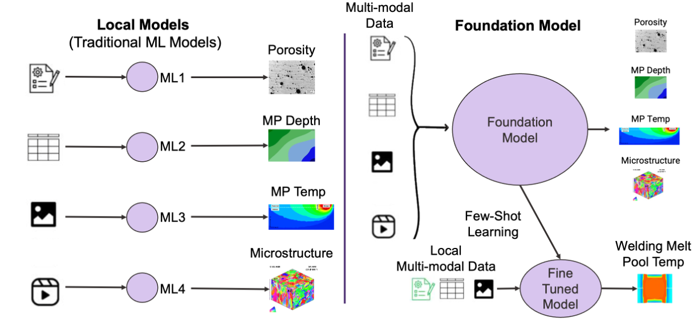

Scientific Foundation Models: Transforming Research Across Disciplines
Vispi Karkaria • 2025
Introduction
Foundation models are changing scientific research, offering powerful AI-driven approaches to discovery, optimization, and prediction across multiple domains. Unlike traditional task-specific models, Scientific Foundation Models (SciFMs) are pre-trained on vast datasets and fine-tuned for specialized applications, enabling cross-domain knowledge transfer and accelerating breakthroughs in fields such as physics, biology, chemistry, and climate science.
How SciFMs Are Changing Scientific Discovery
- Physics & Engineering: AI-driven surrogate models dramatically reduce the computational cost of solving physical systems, from fluid dynamics to climate simulations.
- Neural Operator Models (FNO, DeepONet, ASNO): Foundation models that solve partial differential equations (PDEs) for physics-based simulations in fluid dynamics, heat transfer, and structural mechanics.
- Graph Neural Networks (GNNs) for Materials Science: Used in computational materials discovery and quantum chemistry simulations.
- Chemistry & Materials Science: Models like MatterGen accelerate materials and drug discovery, predicting new molecular structures with desired properties at an unprecedented speed.
- SchNet & OrbNet: Molecular property prediction models trained on quantum chemistry datasets.
- MoleculeFormer: A transformer-based SciFM for drug design and material discovery.
- GNoME (Graph Networks for Materials Exploration): Used by DeepMind to predict novel materials with superior properties.
- Biology & Medicine: AI models such as AlphaFold2 and protein language models (PLMs) are revolutionizing genomics, protein function prediction, and drug design.
- AlphaFold2 & RoseTTAFold: Foundation models for protein structure prediction.
- ESM-2 (Evolutionary Scale Modeling): A transformer-based model trained on millions of protein sequences to predict structure and function.
- BioGPT & Med-PaLM: SciFMs for biomedical literature synthesis and medical question answering.
- Environmental Science: AI-powered weather and climate models improve forecasting accuracy, extreme event prediction, and sustainable resource management.
- FourCastNet: A foundation model for weather and climate predictions, using deep learning to accelerate forecasting.
- ClimaX: A foundation model designed for climate science applications.
- DeepSD (Deep Learning Super-Resolution for Climate Science): Enhances low-resolution climate model outputs using AI.
Key Advancements & Challenges
- Multimodal AI: Integrating text, images, simulations, and numerical data for more comprehensive scientific insights.
- Computational Scaling: Large models require massive computational resources, but optimization techniques like LoRA and adapter-based fine-tuning are helping make them more accessible.
- Interpretability & Trust: Models often act as "black boxes," making it crucial to develop more interpretable AI frameworks for scientific reasoning.
- Autonomous Discovery: The next frontier involves AI-assisted hypothesis generation and experimental design, moving towards truly autonomous scientific agents.
The Future of AI-Driven Science
Scientific Foundation Models are expected to play a critical role in research by supporting data-driven discovery and computational modeling. Improvements in interpretability, computational efficiency, and ethical considerations will enhance their integration into automated workflows and interdisciplinary research. The combination of AI-driven pattern recognition and domain-specific modeling provides a structured approach to analyzing complex scientific datasets, improving predictive accuracy and enabling more scalable simulations.
Application in Manufacturing
In this figure, we introduce the concept of the scientific foundation model in manufacturing, which combines the strengths of specialized local models with the power of massive external data. On the left, traditional AI models focus on specific tasks such as predicting porosity, melt pool depth, melt pool temperature, and microstructure in manufacturing processes. While effective in their individual applications, these models often lack the ability to generalize across different datasets and materials, limiting their scalability.

On the right, the Foundation Model leverages large-scale, multi-source data to learn broad and complex patterns, providing a more generalizable and interpretable approach. By integrating both local manufacturing data and external sources, it creates a unified framework that can be fine-tuned for specific tasks, such as optimizing melt pool temperature in welding.
A key advantage of the foundation model is its ability to learn from multi-modal and multi-fidelity data, combining sensor readings, high-fidelity simulations, and approximations to improve robustness across different conditions. This adaptability enhances precision in manufacturing applications, improving predictive maintenance, defect detection, and process optimization. By merging AI-driven insights with physics-based models, this approach enables more scalable and intelligent digital twins for manufacturing.